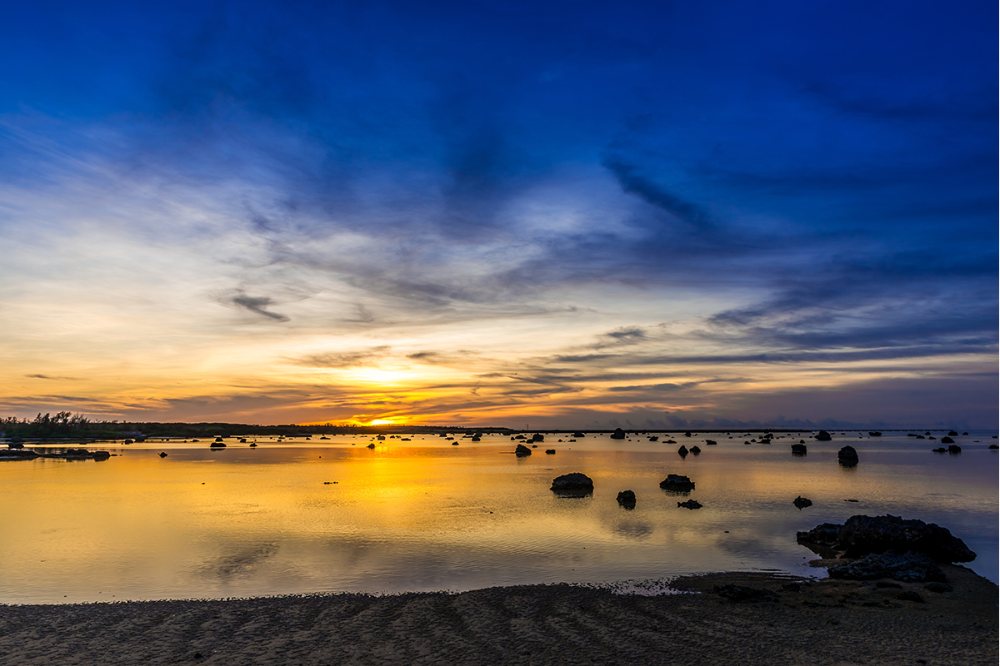
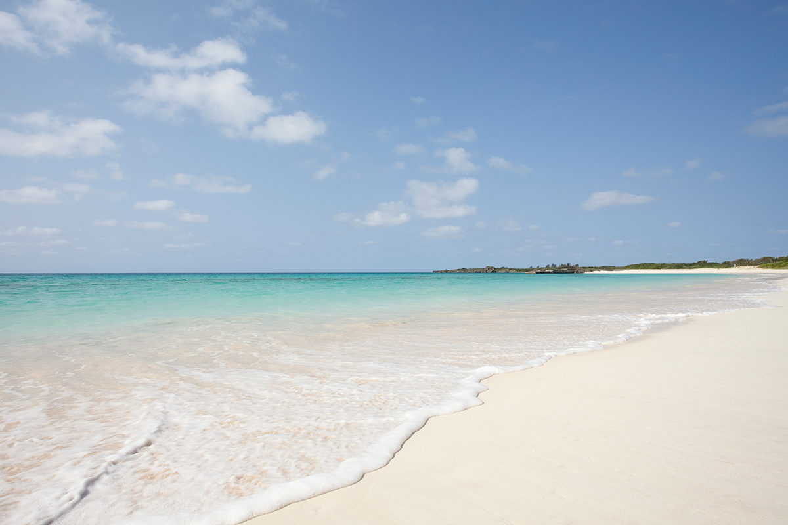
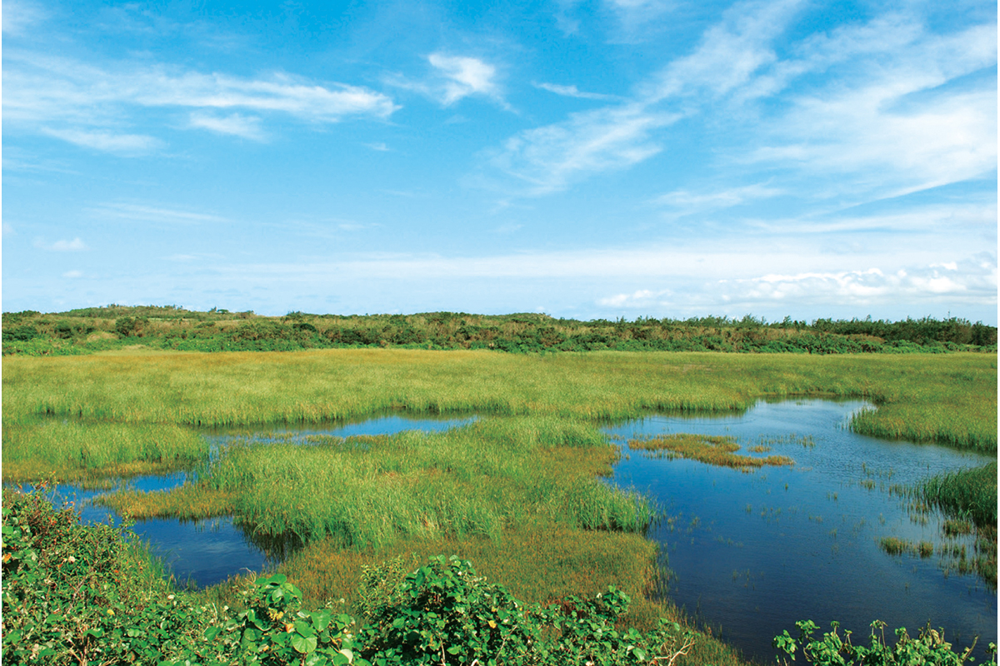
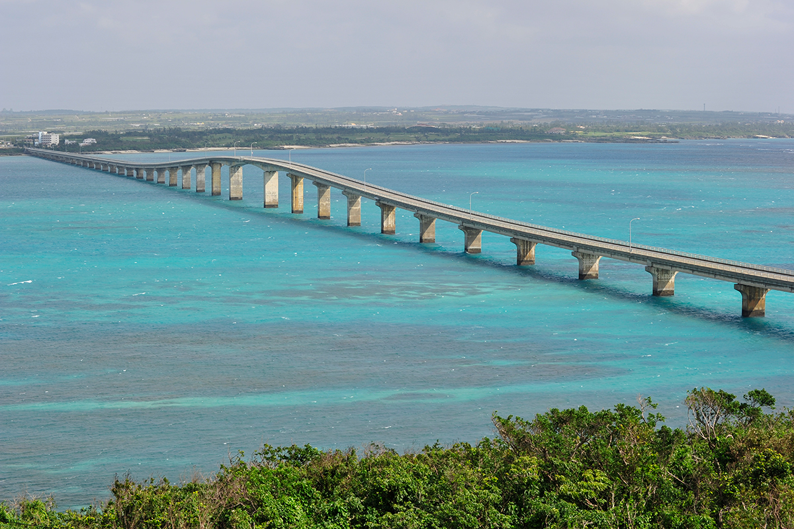
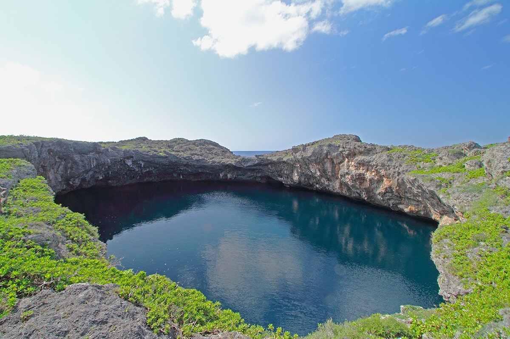
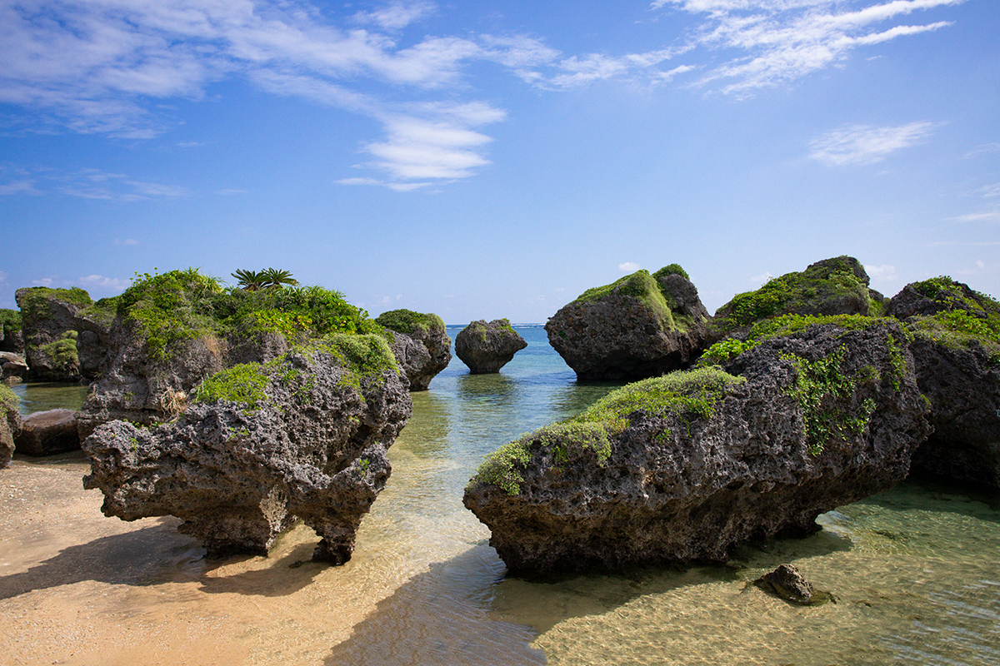
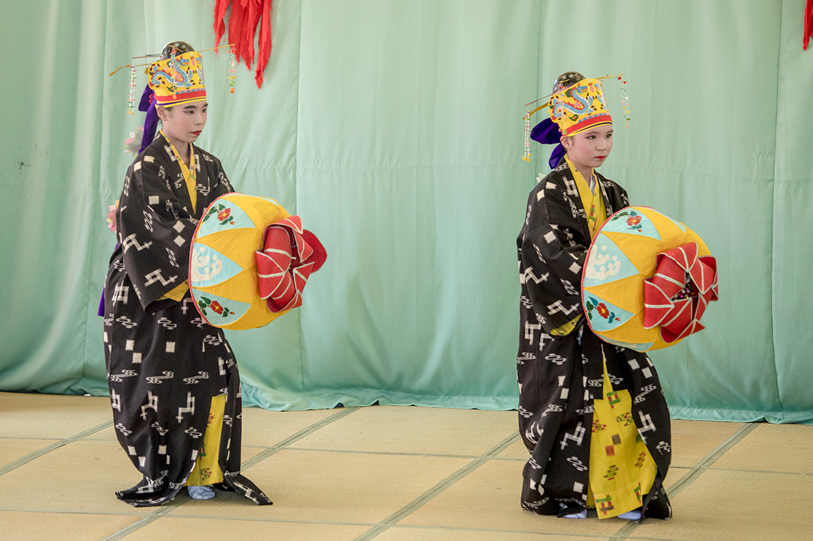
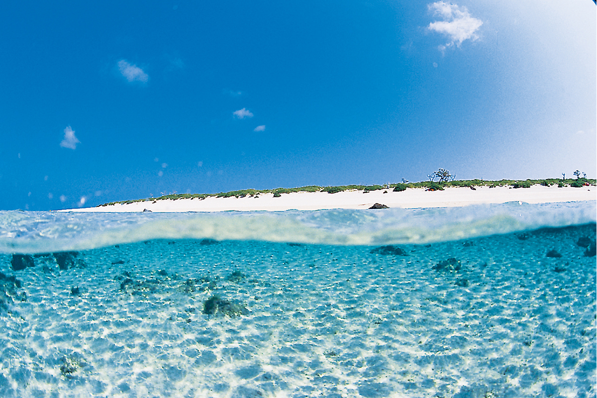

Префектура Окинава · острова Мияко · острова
Малые острова Мияко: от рыбацкого Ирабу до Минны, где живут четыре человека

Вокруг Мияко лежат острова поменьше, и каждый устроен по-своему. До одних доезжают по мосту за полчаса от аэропорта, до других плывут на пароме или нанимают лодку.
Ирабу
Рыбацкий посёлок и пляжи из пудры
Ирабу входит в город Мияко и связан мостом с главным островом группы. Он известен пляжем Савада: из воды здесь торчат камни необычной формы. Их называют «камнями цунами» и рассказывают, что их принесла большая волна, обрушившаяся на острова в XVIII веке. Пляж включён в список ста лучших побережий Японии.

Ещё красивее пляж Тогути: около 800 метров белого песка, такого мелкого, что он рассыпается в пальцах, как пудра. Лучшая панорама острова открывается со смотровой площадки на холме Макияма, высшей точке Ирабу (89 метров).
Ирабу живёт морем. Здесь впервые в Японии стали ловить тунца-бонито у «паяо», плавучих рифов, вокруг которых собирается рыба. На остров приходится около 80% улова бонито во всей префектуре. От рыбацкого порта Сарахама вверх по склону поднимается посёлок Сарахама: старые бетонные дома стоят тесно, ряд над рядом, и рыбацкий дух здесь чувствуется сразу.
Из местной еды стоит попробовать бонито, тунца, соба Ирабу и «удзумаки-пан», спиральную булочку. Из праздников на острове отмечают «Обанмай», праздник большого улова, и «хари», гонки лодок в честь бога моря.
Остров Ирабу
- Как добраться
- на машине около 20 минут от аэропорта Мияко. По острову: автобус, такси, прокат автомобилей
- Телефон
- +81 980-79-6611 (туристическая ассоциация Мияко)
Икэма
Самое большое болото Окинавы

До Икэмы с Мияко ведёт мост Икэма, поэтому добраться сюда несложно. Главное на острове это природа: болото Икэма, самое большое в префектуре, и коралловые рифы вокруг. Весь остров объявлен заповедником для птиц, и здесь можно увидеть редких пернатых, особенно в сезон перелётов.
Остров Икэма
- Как добраться
- по мосту Икэма с острова Мияко; на машине около 35 минут от аэропорта Мияко и около 45 минут от аэропорта Мияко-Симодзисима. Машину, мотоцикл или велосипед берут в прокат на Мияко
- Телефон
- +81 980-79-6611 (туристическая ассоциация Мияко)
Курима
Вид с моста длиной 1690 метров

Мост Курима тянется на 1690 метров и прямой линией соединяет Мияко с Куримой. Море под ним такое, что, проезжая по мосту, трудно подобрать слова. От Мияко сюда добираться удобно, и в последние годы на Куриму переезжает всё больше новых жителей. В 2024 году на острове жили 157 человек.
Остров Курима
- Как добраться
- по мосту Курима с острова Мияко; на машине около 20 минут от аэропорта Мияко и около 40 минут от аэропорта Мияко-Симодзисима. По острову: такси, прокат автомобилей и мотоциклов (оформляют на Мияко)
- Телефон
- +81 980-79-6611 (туристическая ассоциация Мияко)
Симодзи
Пруд Тори-икэ и полоса над морем

Симодзи соединён мостами с Ирабу. Здесь находится аэропорт Мияко-Симодзисима, и конец его взлётной полосы, известный как «17END», выдаётся прямо в море: на этот вид обязательно стоит посмотреть. Ещё одна редкость острова, Тори-икэ: два пруда, которые соединяются под водой. Это известное место для пещерного дайвинга.
Остров Симодзи
- Как добраться
- самолётом из аэропорта Наха до аэропорта Мияко-Симодзисима около 50 минут, из Ханэды около 3 часов; на машине около 30 минут от аэропорта Мияко. По острову: автобус, такси, прокат автомобилей, мотоциклов и велосипедов
- Телефон
- +81 980-79-6611 (туристическая ассоциация Мияко)
Огами
Остров, где живут боги

Огами называют островом богов, и большая его часть считается священной: туда, где начинаются заповедные места, посторонним заходить нельзя. Поэтому туристам лучше прийти с гидом. На западном берегу стоят скалы причудливой формы: море подтачивает только их нижнюю часть, и камни словно висят над водой. Остров крошечный, его обходят пешком. По данным 2024 года, на Огами жили 22 человека.
Остров Огами
- Как добраться
- паром «Укан кариюсу» от рыбацкого порта Симадзири (остров Мияко), около 15 минут. По острову: пешком
- Телефон
- +81 980-72-5350 (столовая «Опую сёкудо», справки по острову)
Тарама
Сахарный тростник и танцы восьмого месяца

Тарама лежит в стороне от Мияко. Это ровный коралловый остров, почти весь занятый плантациями сахарного тростника, и в сезон уборки над ним стоит запах чёрного сахара. Тарама входит в число «самых красивых деревень Японии»: за танцы «хати-гацу одори», которые исполняют с молитвой об урожае пяти злаков, и за планировку посёлка, построенного по правилам фэн-шуй.
Остров Тарама
- Как добраться
- самолётом из аэропорта Мияко до аэропорта Тарама около 20 минут; паромом «Ферри Тарама III» из порта Хирара (остров Мияко) около 2 часов. По острову: автобус, прокат автомобилей, велосипедов, электроскутеров и электросамокатов
- Телефон
- +81 980-79-2828 (туристическая ассоциация деревни Тарама)
Минна
Секретный остров с морскими черепахами

На Минну нет регулярных рейсов: сюда попадают только на зафрахтованной лодке с Тарамы, поэтому остров называют «островом второго порядка». На нём, по данным 2024 года, жили четыре человека. Минну окружают коралловые рифы и очень прозрачная вода, здесь ныряют с маской и занимаются другими морскими развлечениями, а если повезёт, можно встретить морскую черепаху.
Остров Минна
- Как добраться
- регулярного сообщения нет; зафрахтованная лодка из порта Маэдомари (остров Тарама). По острову: пешком
- Телефон
- +81 980-79-2828 (туристическая ассоциация деревни Тарама)